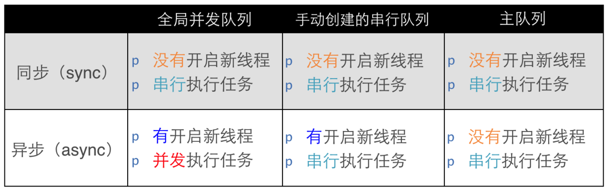

GCD
- 全称是Grand Central Dispatch，“伟大的中枢调度器”
- GCD是苹果公司为多核的并行运算提出的解决方案
- 纯C语言，提供了非常多强大的函数
优势
- GCD会自动利用更多的CPU内核（比如双核、四核）
- GCD会自动管理线程的生命周期（创建线程、调度任务、销毁线程）
- 只需要告诉GCD想要执行什么任务，不需要编写任何线程管理代码
基本概念
任务和队列
GCD中有2个核心概念
- 任务：执行什么操作
- 队列：用来存放任务
1
2
3
|
Tips：任务的取出遵循队列的FIFO原则：先进先出，后进后出
|
任务
一、执行任务
1
2
3
4
5
6
7
8
9
10
11
| - queue：队列
- block：任务
dispatch_sync(dispatch_queue_t queue, dispatch_block_t block);
dispatch_async(dispatch_queue_t queue, dispatch_block_t block);
dispatch_barrier_async(dispatch_queue_t queue, dispatch_block_t block);
|
注意:
同步：只能在当前线程中执行任务，不具备开启新线程的能力
异步：可以在新的线程中执行任务，具备开启新线程的能力
队列
一、并发队列（Concurrent Dispatch Queue）
- 可以让多个任务并发（同时）执行（自动开启多个线程同时执行任务）
- 并发功能只有在异步（dispatch_async）函数下才有效
1
2
3
4
5
6
7
8
9
10
11
12
13
14
15
16
17
18
19
20
21
|
dispatch_queue_t
dispatch_queue_create(const char *label,
dispatch_queue_attr_t attr);
dispatch_queue_t queue = dispatch_queue_create("queue", DISPATCH_QUEUE_CONCURRENT);
dispatch_queue_t dispatch_get_global_queue(dispatch_queue_priority_t priority, unsigned long flags);
dispatch_queue_t queue = dispatch_get_global_queue(DISPATCH_QUEUE_PRIORITY_DEFAULT, 0);
#define DISPATCH_QUEUE_PRIORITY_HIGH 2
#define DISPATCH_QUEUE_PRIORITY_DEFAULT 0
#define DISPATCH_QUEUE_PRIORITY_LOW (-2)
#define DISPATCH_QUEUE_PRIORITY_BACKGROUND INT16_MIN
|
二、串行队列（Serial Dispatch Queue）
- 让任务一个接着一个地执行（一个任务执行完毕后，再执行下一个任务）
1
2
3
4
5
6
7
|
dispatch_queue_t queue = dispatch_queue_create("queue", NULL);
dispatch_queue_t queue = dispatch_get_main_queue();
注意：主队列是GCD自带的一种特殊的串行队列，放在主队列中的任务，都会放到主线程中执行。
|
三、各种队列的执行效果

特别注意：使用sync函数往当前串行队列中添加任务，会卡住当前的串行队列 (线程卡死)
新手易混淆
有4个术语比较容易混淆：同步、异步、并发、串行
- 同步和异步主要影响：能不能开启新的线程
同步：只是在当前线程中执行任务，不具备开启新线程的能力
异步：可以在新的线程中执行任务，具备开启新线程的能力
- 并发和串行主要影响：任务的执行方式
并发：多个任务并发（同时）执行
串行：一个任务执行完毕后，再执行下一个任务
GCD运用
一、线程间通信
1
2
3
4
5
6
7
8
| 从子线程回到主线程
dispatch_async(
dispatch_get_global_queue(DISPATCH_QUEUE_PRIORITY_DEFAULT, 0), ^{
dispatch_async(dispatch_get_main_queue(), ^{
});
});
|
二、延时执行
1
2
3
| dispatch_after(dispatch_time(DISPATCH_TIME_NOW, (int64_t)(2.0 * NSEC_PER_SEC)), dispatch_get_main_queue(), ^{
// 2秒后异步执行这里的代码...
});
|
三、一次性代码
1
2
3
4
5
|
static dispatch_once_t onceToken;
dispatch_once(&onceToken, ^{
});
|
四、快速迭代
1
2
3
4
|
dispatch_apply(10, dispatch_get_global_queue(0, 0), ^(size_t index){
});
|
五、队列组
1
2
3
4
5
6
7
8
9
10
11
|
dispatch_group_t group = dispatch_group_create();
dispatch_group_async(group, dispatch_get_global_queue(DISPATCH_QUEUE_PRIORITY_DEFAULT, 0), ^{
});
dispatch_group_async(group, dispatch_get_global_queue(DISPATCH_QUEUE_PRIORITY_DEFAULT, 0), ^{
});
dispatch_group_notify(group, dispatch_get_main_queue(), ^{
});
|